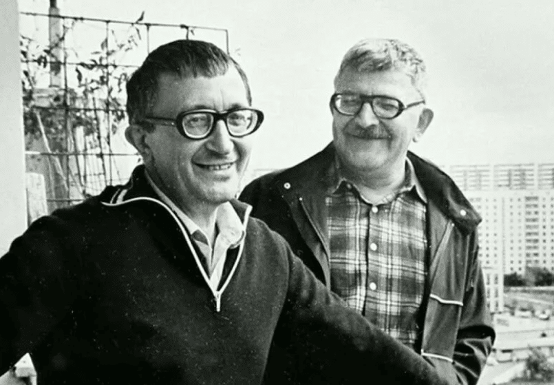
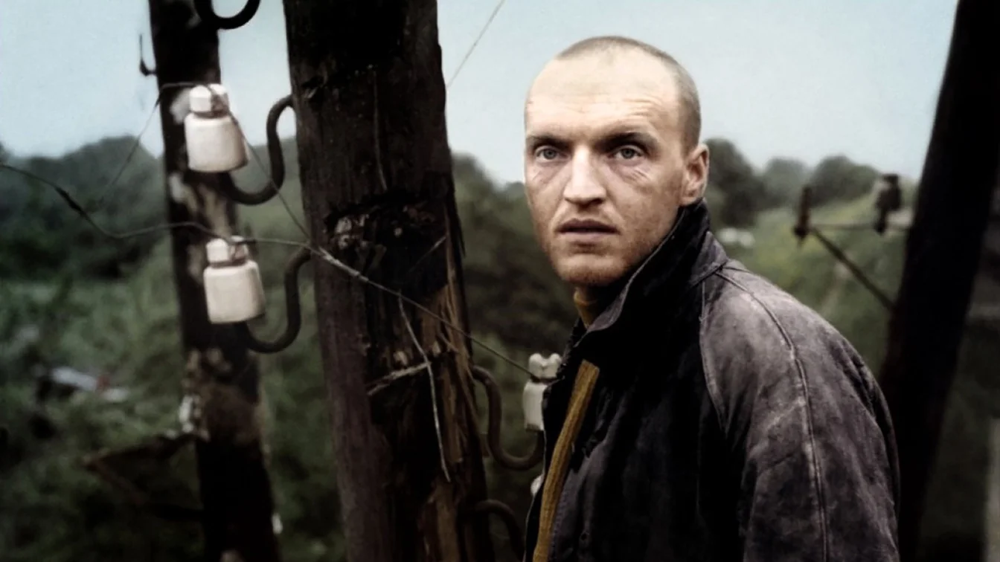
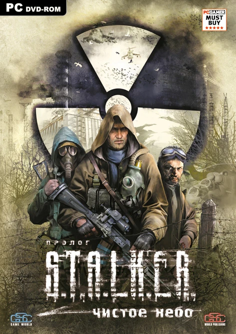
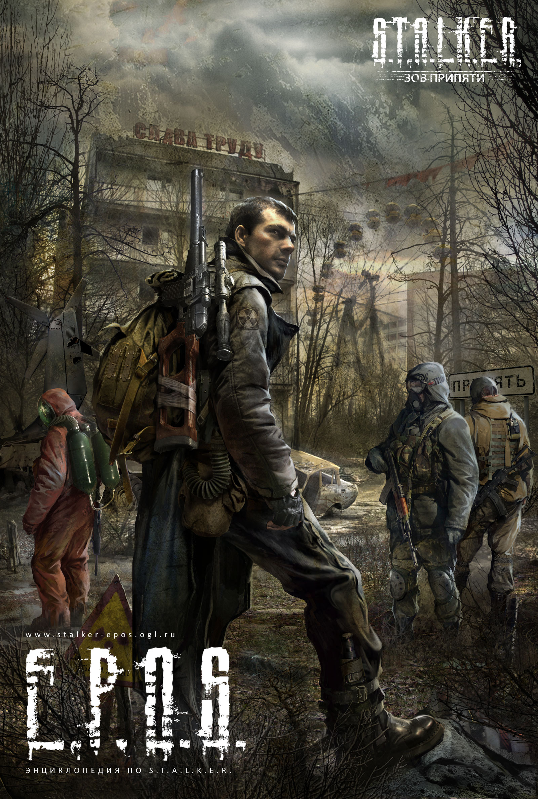
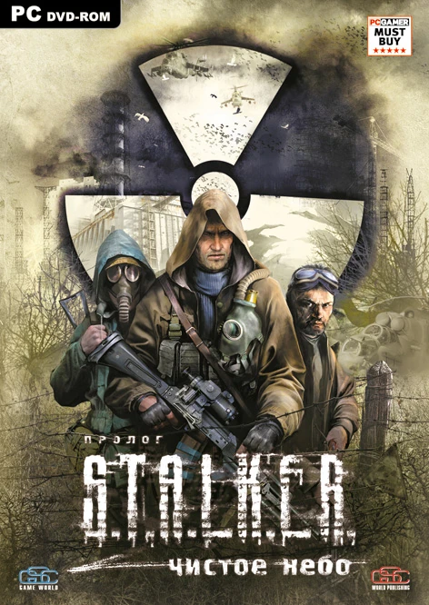
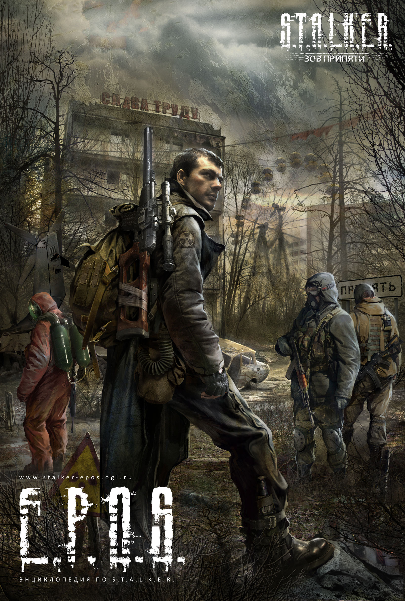
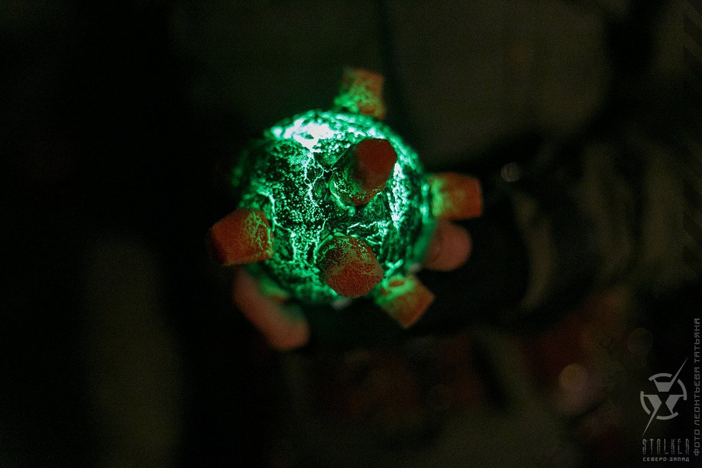

L'univer de S.T.A.L.K.E.R. est tres connu, cependant pas en Europe mais en Asie de l'ouest, dans des pays comme le Kazakhstan, la Belorussie mais surtout en Russie et en Ukraine. La-bas ce jeux est tout aussi connu que Call of Duty ou fornite en France.
- De quoi tout est partie ?
- Quel est son histoir ?
- Qu'est ce que cela donne aujourd'hui ?
Par quoi tout a commence ?
Pique-nique au bord du chemin
Tout a commencer par l'aparition du roman culte "Pique-nique au bord du chemin" écrit par les frères Arcadi et Boris Strougatski: L'Homme découvre l'existence d'une forme de vie extraterrestre, et sa venue sur Terre. Pourtant, il ne s'agit que d'une brève visite : à défaut d'une rencontre directe avec l'homme, les visiteurs semblent ne laisser qu'une marque de leur passage, sous la forme de six vastes zones qui sont le lieu de phénomènes étranges et inéxplicables. Ces zones sont un mystère complet, puisqu'il est impossible de savoir si elles sont un moyen de communication avec les extraterrestres, une manière de piéger l'homme, ou une marque de passage non intentionnelle.
Autrement dit "les visiteurs" ce sont juste arreter sur terre d'une facon rapide (dont le nom du livre: "Pique nique au bord du chemin") et ont laisser des "déchets": des tecnologies qui pour eux semblais être des déchets et pour l'homme des technologies incompréhensibles. Les six zones de visite étais sérieusement surveillé par des millitaires et entouré d'un grand mure de 20 metres de hauteur, cependant des pérsonnes arrivais quand même à y pénétré illégalement, pour récuperer les "dechets" appelé les artefacts et ensuite les vendre au marché noir pour des grandes sommes, ces personnes sont nomé: les stalkers.
le film: S.T.A.L.K.E.R.
La prochaine étape était le film soviètique Stalker réalisé par Andrei Tarkovski, sortie en 1979, le sénarion lui a été écris par les frères Strougatski. Le film s'inspire du livre et nous presente un stalker: le personage principal Redrick Shouard, qui accompagne deux personne qui souhaite rentrer dans la Zone pour trouver "l'executeur de voeux" un des "déchet" laissé par les extratérrestres qui peut soit disant éxécuter les voeux. Un long et compelexe film, très compliqué à cérner, avec un grand sens derrière...
Un second souffle
S.T.A.L.K.E.R. Shadow of Chernobil
 



L'étape la plus importante est la sortie du jeux "STALKER shadow of chernobyl" puis encore deux autres partie du jeux qui sont sortie après ("STALKER clear sky" et "STALKER call of pripyat") pour compléter l'histoire de la premier partie. Les créateurs s'inspirais du livre est du film mais l'histoire a beaucoup changé...
Comment est la nouvelle "Zone" propose par le jeux ?
Il n'y a plus qu'une Zone au lieu de six et elle n'as aucun raport avec une visite extratérrestre, après la première explosion à Chernobyle dans l'histoire du jeux une dexième explosion surviens mais personne ne sais pourquoi, le ciel 30km au tout de la centrale de Chernobyle sais couvert d'une lumière aveuglante, pendant quelques segondes le silence, tout les nuages ont disparues du ciel et la terre frissonna. Le jour suivant une millier de millitaires sont envoyer sur place pour arriver jusqu'à la centrale et commprendre ce qu'il sait passé, ils ne sont pas revenue. Des sientifiques envoyé là-bas quelque temps après ont découvets que les animaux ont muté et sont extrénements agressif, des anomalies sont aparue déviant toutes lois de la phisique et à l'intérieur de ces anomalies aparaisent des artefacts, des petis caillous briants de diférentes couleurs, il y en avait qui dégagé juste de la raduactivité et d'autres pouvais donner de l'énérgie et même soinier des blaisurs. Les stalkers sont ceux qui s'introduises illégalement dans la zones(qui est toujour bien protegé par des millitaires et entouré d'un grand mure) pour différentes raisons, principalement pour gagnier de l'argent en trouvant des artefacts rares, d'autres pour trouver une vie méilleurs...
Les Anomalies
Les anomalies sont les endroits ou les lois de phisique normal ne fonctiones plus, des anomalies éléctriques, anomalie de feu ou encore gravitationelles, tu peux te faire éléctocuter par des millier de voltes, te faire bruler, te faire éjécter à dix métres ou te faire déchirer en mille morceaux. Sur la premier photo un exemple d'anomalie gravitationelle et un stalker qui a eu la mal chance de tomber dedant...
Les Artefacts
Un artefact est un objet d'une nature physique mal comprise, formé dans les anomalies. Tout d'abord, il est intéressant car il affecte le porteur de différentes manières : l'influence peut être à la fois bénéfique et néfaste. La vente d'artefacts est théoriquement la principale source de revenus des stalkers, dont la plupart sont venus dans la Zone précisément dans ce but. Les scientifiques travaillent avec les artefacts dans divers domaines, par exemple les médecins sont très intéressés par l'étude des propriétés des artefacts.
Les mutants
Les mutants sont les animaux muté de la Zone(ou des humain). Assez divérsifié et très dangereux pour les stalkers, ils peuvent même avoir des pouvoirs éxéptionnels, comme le controleur, qui peut prendre sous controle des humains ou d'autres mutants et les controler en leur disant de tirer sur d'autres stalker par exemple. Un humain qui reste trop longtemps sous controle d'un controleur, perd totalement emprise de son corps et devient un zombie.
Les fractions
Les fractions(groupements/clans) sont des stalkers qui se réunissent en grands groupes pour des raisons idéologiques ou autres, ou simplement pour plus de sécurité. Certaines organisations gouvernementales, par exemple les millitaires, sont également reconnue comme une fraction. Des groupements ont commencé à apparaître lorsqu'un nombre suffisant de stalkers sont apparus dans la Zone, permettant à certains d'éclairer des idées et de former un groupe.
Qu'est-ce que cela donne aujourd'hui ?
Cette univer a beaucoup grandi et aujourd'hui tout les ados slaves connaisent Stalker et une grande communoté de fans est aparue et a beaucoup élargie l'univers de Slalker.
Des Livres
Apres la sortie du jeux, énormement de livres ont été écrit pour élargire cette univer.
Stay Out
Le jeux Stay Out est sortie, il ce base plus sur le livre que sur le jeux, mais le principe est le meme que sur stalker sauf que ici c'est en multiplijoueurs.

Day Z
DayZ est un jeux déjà éxistant avant mais il permet d'instaler des modes et en faire mle jeux que tu souhaite, des serveurs de stalker RP ont commencé à aparaitre en 2019 ou la map est composé des maps des trois parties de stalker mais trois fois plus grandes et de qualité bien meilleur. RP signifie roll play (jeux de roll), c'est-à-dire ce mettre dans la peau d'un stalker et survivre avec d'autres stalkers et fractions, qui eux sont des vraies joueurs qui eux aussi joue leurs rol.
Stalkerstricke
Stalkerstrick, est un jeux qui consiste a faire de l'RP mais dans la vrai vie, avec des airsofts et des costumes(des cosplay), une partie peut duré un jour comme trois jours entiers dans le jeux.
Stalker 2

Stalker 2 le coeur de la Zone, a été anoncé en 2021 et sortira en 2023, nouvelle histoir et les meilleurs graphismes qui éxistent aujourd'hui, un jeux énormement attendu par les fans qui va encore agrandire cette univer car ce jeux sortiras sur Xbox et sera bien plus connue que les trois premiers partie.